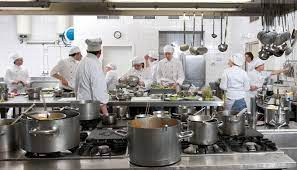
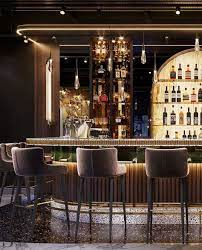

First, the following quote shows how fast food is becoming more accessible to people. “ In 1970, Martinsburg had six fast-food restaurants; today it has more than forty.” (McJobs by Eric Schlosser and Charles Wilson) This supports my claim because it shows how fast food has become more accessible to all people and this is good because fast food is a valuable source of food for some people. The fact that more than a third of american kids eat fast food every day proves that. (newsweek) Second, the following quote shows that fast food companies produce consistent and inexpensive food for people. “The strict rules at fast-food restaurants help to create food that always tastes the same. They help
A kitchen is a room or part of a room used for cooking and food preparation in a dwelling or in a commercial establishment. A modern middle-class residential kitchen is typically equipped with a stove, a sink with hot and cold running water, a refrigerator, and worktops and kitchen cabinets arranged according to a modular design. Many households have a microwave oven, a dishwasher, and other electric appliances. The main functions of a kitchen are to store, prepare and cook food (and to complete related tasks such as dishwashing). The room or area may also be used for dining (or small meals such as breakfast), entertaining and laundry. The design and construction of kitchens is a huge market all over the world.
Lounges have been around for quite some time. In fact, people have been lounging around in rooms specifically meant for people to relax and just chill out in since ancient times! More recently, however, big cities like Madrid, Barcelona, Paris, and London have incorporated specific lounge areas into their bars, hotels, and restaurants in an effort to invite a more subdued crowd that might want to relax and have just a small drink or a snack. This is what we call the lounge area. Lounges tend to attract the after-work crowd, seeking a calmer environment where dancing isn’t a necessity.
While the bar or pub environment tends to be crowded, messier, with little attention to décor. A pub or a bar might just serve alcohol to its patrons, and provide loud live music – a rowdy environment indeed! A lounge, on the other hand, may or may not serve food. The lounge may have an extensive drink menu that sets it apart from the often-sleazy pub or bar atmosphere. In fact, the cocktail is often served up in a lounge environment. Sure, many places that serve cocktails are often called “cocktail bars,” but step foot in almost any cocktail bar and you will immediately feel as if you are not in a typical bar!
